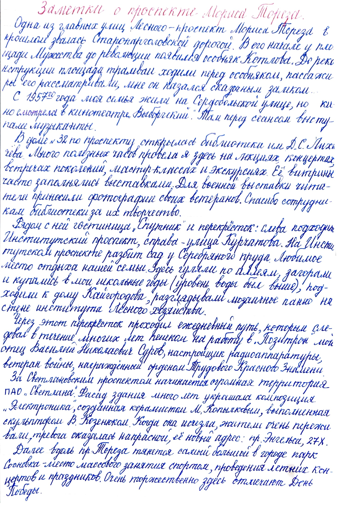
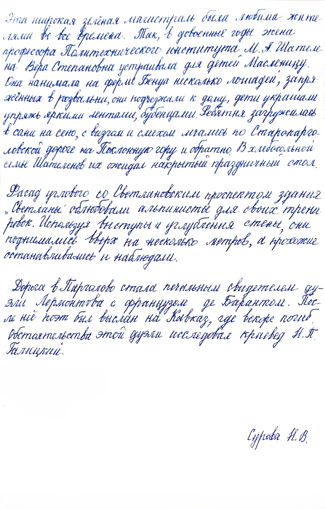

← Вернуться на главную страницу
Сурова Наталья Васильевна • Краевед, читательница библиотеки
Заметки о проспекте Мориса Тореза
Ниже представлены рукописные страницы воспоминаний и краеведческих заметок, переданные в архив библиотеки.

Страница 1 (нажмите для увеличения)

Страница 2 (нажмите для увеличения)
← Вернуться на главную страницу